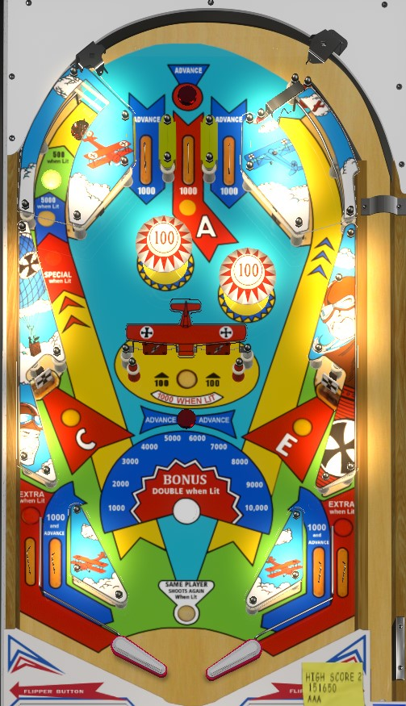

Blue Max is a 4-player game. Red Baron is a 2-player game. To my knowledge, rules and scoring are identical between the two.
Advance rollover buttons toggle whether or not the center spinners are lit. Shoot the spinners, choosing whether to avoid or press the center rollover button so that the spinners are lit for 1,000 points per spin when the ball goes through them. On the final ball of the game, consider shooting the right orbit to get back to the top lanes for bonus advances, since bonus is only doubled on the final ball. Collecting the Ace letters from the center top lane and lower side drop targets lights the out lanes for extra ball.
All three top lanes score 1,000 points and a bonus advance. The center lane also lights the letter A in the word Ace. Bumpers always score 100 points.
The rollover buttons above the top lanes and in the center of the playfield advance the bonus and toggle whether the spinners are lit. Spinners score 100 points per spin when not lit or 1,000 per spin when lit. Lit spinners are by far the best source of points. When shooting the spinners, be careful about the angle with which you do so; avoid the center button if the spinners are already lit, or press it if they are not, but also be mindful of the bumpers above the spinners and the possible return feeds from them.
The center top lane and the left and right drop targets award 1,000 points and light their corresponding letters in the word Ace. Spelling Ace in a single ball lights the out lanes, either simultaneously or alternately based on game settings, for extra ball.
The left saucer starts each ball at a value of 500 points. Making the saucer scores and advances the lit value in the sequence 500 - 5,000 - Special, before resetting back to 500. The left saucer lane is a narrow enough and reject-heavy enough shot that this is not worth going for unless Special is set to score a free game and that is meaningful to you.
Blue Max / Red Baron has a conventional in/out lane setup. In lanes score 1,000 points and a bonus advance. Out lanes score 1,000 points and are lit for extra ball, either together or alternately based on 10-point switches depending on game settings, for extra ball.
Bonus is advanced by any top lane, any rollover button, and the in lanes. Bonus is doubled on the final ball of the game only. Max bonus is 2x 20,000 = 40,000 points. Bonus cannot be collected mid-ball and there is no carryover for any part of the bonus.